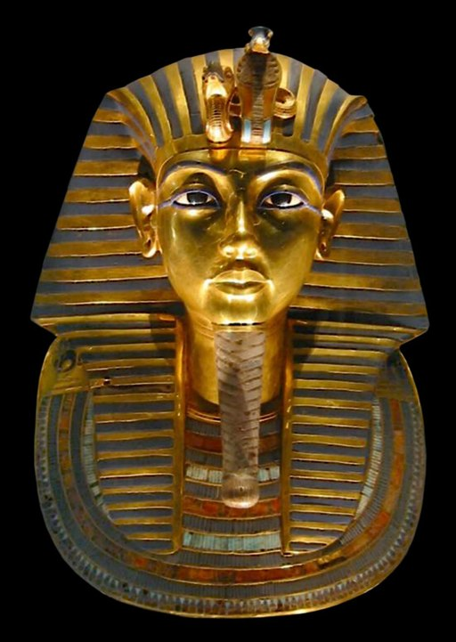
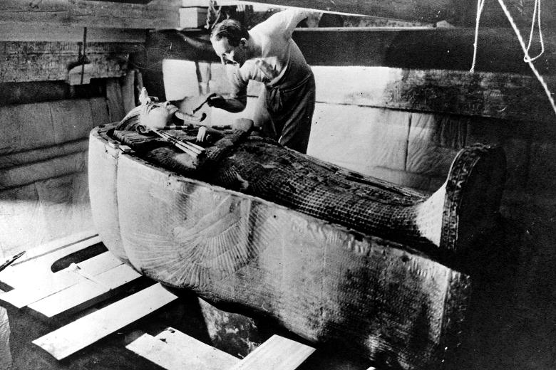
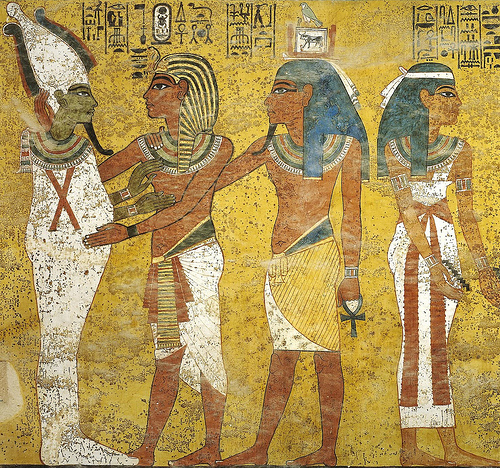

Disciplinas antropológicas
¿Cómo y dónde inicia este viaje?
Nos encanta que hayas decidido participar en esta aventura viajera, tu rol al igual que el de un expedicionista es adentrarte en tierras lejanas (¡y también otras que son más cercanas a ti!), para descubrir los tesoros ocultos de la condición humana. Necesitas para ello, toda tu curiosidad y también un profundo respeto por la diversidad que caracteriza a lo que nos rodea, incluidas las tradiciones, creencias, prácticas cotidianas y saberes populares y ancestrales para transformarte, a la manera en la que los antropólogos lo hacen, en un verdadero embajador de la humanidad, un navegante en las aguas desconocidas de la cultura, cuya brújula moral es el respeto por la diversidad y cuya recompensa es el enriquecimiento del conocimiento humano y la promoción de la armonía en un mundo diverso y complejo.
Las reglas del juego
A partir de ahora, encontrarás letras de dos colores diferentes: las que se encuentran en color naranja son para que identifiques explicaciones e indicaciones que son necesarias para lograr una mayor comprensión de los temas que se abordan en esta unidad; las letras que aparecen en color negro son parte de la historia en la que te vas a sumergir. Ahora sí, ¡damos inicio!
Los secretos del antiguo Egipto
Imagínate que has adquirido el poder de viajar en el tiempo, traspasando las barreras del pasado y del presente. Con esta habilidad extraordinaria, te sumerges en una de las civilizaciones ancestrales que por siglos ha despertado el interés de antropólogos y legos, nos referimos al antiguo Egipto y uno de sus gobernantes, quizás el más famoso de ellos. ¿Sabes de quién hablamos? Así es, el rey o faraón Tutankamón. Piensa por un momento, ¿qué sabes o recuerdas de él? ¿Lo tienes? Entonces todo está listo para que prosigas.

Máscara funeraria de Tutankamón en el Museo Egipcio de El Cairo. Foto de MykReeve, Wikimedia Commons.
Tutankamón fue un rey de Egipto, y por mucho tiempo permaneció sin revelar sus secretos, el descubrimiento de su tumba en 1922, permitió que conociéramos más, no solo sobre Tutankamón, sino también acerca de esta interesante civilización y sus enigmas.
¿Qué tiene que ver Tutankamón con la antropología?, y más aún, con las ramas de la antropología.
La tumba de Tutankamón es algo así como el “Santo Grial” del mundo de la antropología y la arqueología, pues durante décadas, los estudiosos de todo el mundo anhelaron encontrar este tesoro oculto de la historia antigua, y cuando finalmente se descubrió en 1922, desató una fiebre de conocimiento que sigue fluyendo hasta hoy. ¡Sorprendente y maravilloso a la vez! ¿No crees?
Como el Santo Grial, la tumba de Tutankamón representó un objeto de búsqueda arqueológica y antropológica sin parangón, dentro de sus cámaras secretas se encontraba un tesoro invaluable, lleno de artefactos, objetos funerarios y tesoros inimaginables, que ofrecían pistas sobre las creencias religiosas, las prácticas funerarias y la vida cotidiana del Antiguo Egipto.
Un campo fértil para que antropólogos de diversas ramas exploren y comprendan aspectos de la cultura, la sociedad y la historia del Antiguo Egipto. Su tumba y sus tesoros también ofrecen valiosos insights sobre las creencias y prácticas funerarias de esta antigua civilización.
Así, cada una de las ramas o especialidades de la antropología tiene un cachito de la historia de este enigmático personaje que nos permite comprender mejor la cultura del antiguo Egipto. Echemos un vistazo a estas perspectivas.
Viajamos a 1922, Egipto. Estamos en una excavación en el Valle de los Reyes, dirigida por el arqueólogo Howard Carter. Al entrar en la tumba del faraón Tutankamón, quedas asombrado por los tesoros que lo acompañan en su viaje al más allá. Hay más de 5.000 piezas de oro, plata, bronce, marfil, madera, piedra, cerámica, tela y papiro, que representan escenas religiosas, rituales funerarios y símbolos de poder.

Howard Carter examinando el sarcófago de Tutankamón Foto de Harry Burton. Wikimedia Commons
Destacan el sarcófago antropomorfo con tres ataúdes anidados, el último de oro macizo; la máscara funeraria de oro con piedras preciosas y el trono real. Howard Carter te explica que el trono muestra escenas del faraón y su esposa, y que el ataúd contiene estatuas guardianas del ka (fuerza vital), vasos canopos con vísceras momificadas y ushebtis (figurillas mágicas).
Las pinturas murales en las paredes te impresionan. Decoran la cámara funeraria y representan al faraón siendo recibido por los dioses Osiris, Anubis e Isis.
Tutankamón abraza a Osiris. Imagen de Solomon Witts, Wikimedia Commons
¿Te has dado cuenta en qué hemos centrado nuestra atención? ¡Así es!, nos estamos centrando en los restos materiales de la cultura egipcia, es decir en los objetos que se han encontrado en la tumba. Los arqueólogos excavan y analizan artefactos, estructuras, monumentos, restos humanos y otros vestigios para reconstruir la historia y las formas de vida de las civilizaciones antiguas (Moganapriya & Ramya 2022).
Te emociona poder conocer más sobre la cultura y la ideología del faraón a través de sus objetos. Por lo que tienes que registrar e interpretar los objetos, las estructuras y los paisajes que se encuentran en la tumba.
Según la perspectiva arqueológica, ¿qué te dice esta información? La arqueología proporciona información sobre cómo vivían las personas en diferentes épocas y lugares, así como cómo interactuaban con su entorno y otros grupos culturales.
Con lo que has hallado en la tumba puedes darte una idea de cuáles eran los objetos más preciados para el faraón, así como la importancia que tenía para su gente. Sin embargo, te haces algunas preguntas, como ¿a quién pertenecen los restos de los otros dos ataúdes?, ¿qué otras cosas podemos averiguar de las inscripciones de la tumba?, ¿cómo murió el faraón?, ¿qué edad tenía?
Para poder resolver estas interrogantes, necesitaremos de las otras especialidades de la antropología.
Como pudiste observar, cada una de las ramas de la antropología tiene una visión diferente y particular que ayuda a comprender cada uno de los aspectos de esta cultura, pero juntas nos ayudan a ver y detallar el panorama completo. ¿Qué otras dudas te surgieron del descubrimiento de la tumba del rey Tutankamón? ¿Qué especialidades podrían ayudarte a comprenderlas? Reflexiona un momento sobre esto, ¡quién sabe!, quizás en ti comienza a germinar esa semillita que puede dar origen a un antropólogo ¿físico, social, lingüista? o especializado en arqueología, ¡el tiempo nos dirá!
Tiempo para un desafío

Disciplinas antropológicas
Sabemos que a partir de este viaje, has profundizado en tus conocimientos sobre las diferentes ramas de la antropología, así que hemos preparado un desafío que estamos seguros de que te va a encantar. Participa en él y comprueba lo mucho que avanzaste.
¿Qué tal te fue en el desafío? Seguramente has aprendido bastante y nos da mucho gusto que sea así.
Es momento de continuar con nuestro viaje.